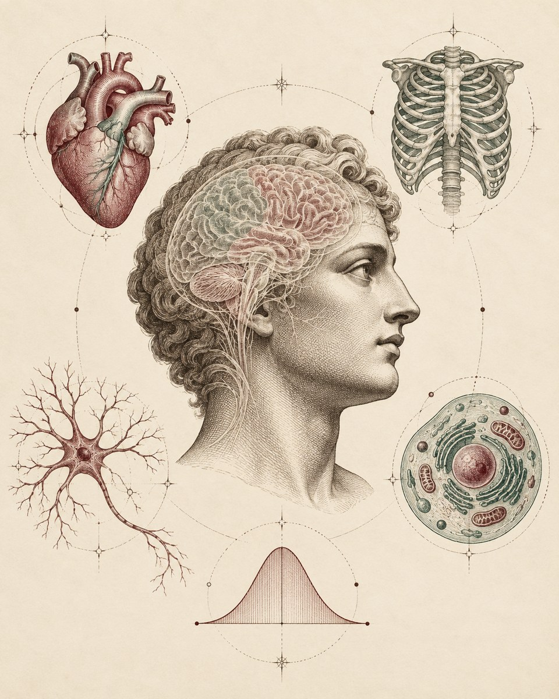

পরিসংখ্যান / ব্যাখ্যা
ডেটা কী বলছে, আর কী বলছে না?
পরিচিত উদাহরণে শিখুন অনিশ্চয়তা, প্রমাণ ও পরিসংখ্যানের ভাষা।
পরিসংখ্যানের পাঠ →পরিসংখ্যান ও গবেষণা, সহজ ভাষায় · Statistics and research, made understandable
পরিসংখ্যান শিখুন, গবেষণা বুঝুন, প্রমাণ নিয়ে ভাবুন।
Accessible learning for curious readers, students, and researchers.
বিজ্ঞান · মানুষ · সমাজ
সহজ বাংলায় ব্যাখ্যা ও পাঠ
Start Here → Intermediate → Technical. Lessons, graphs, tools, and statistics reading.
Readable explanations of methods, uncertainty, and biomedical applications.
An English-language page describing a long-term research institute vision.
History, researchers, and useful research collections.
প্রথমবার এসেছেন?
পরিসংখ্যানের প্রথম পাঠ পড়ুন → রেখার ঢাল বদলে গ্রাফ দেখুন → নিজের ভাষায় কী বুঝলেন বলুন। একবারে সব পড়ার প্রয়োজন নেই।
প্রথম পাঠ পড়ুন →আরও এগোতে চাইলে: Advanced notes · শিক্ষকদের পাঠতালিকা
About / পরিচয়
Making Sense-এ সাধারণ পাঠক ও শিক্ষার্থীদের জন্য পরিসংখ্যান, গণিত ও গবেষণার সহজ ব্যাখ্যা, অনুশীলন এবং বিস্তারিত নোট প্রকাশ করি। লেখা বাংলা, ইংরেজি অথবা দুই ভাষাতেই হতে পারে।
Written by Md. Ikramul Haq Khan, an M.S. student in Mathematical Sciences (Applied Statistics) at UNLV. Each article has one permanent home; translations are linked when available.
Academic profile & CV · Society, policy & public affairs at East Bengal Renaissance
আপনার কথাও শুনতে চাই
লেখা কেমন লাগল? কোনো ভুল পেয়েছেন? কোন বিষয়ে আরও জানতে চান? আপনার কথা জানালে সাইটটি আরও ভালো করতে পারব।
বাংলা ফিডব্যাক ফর্ম খুলুন ↗নাম ও ইমেইল দেওয়া বাধ্যতামূলক নয়। উত্তর শুধু পরিচালকের কাছে থাকবে; এটি পাবলিক কমেন্ট নয়। ফর্মটি Google Forms-এ খুলবে।